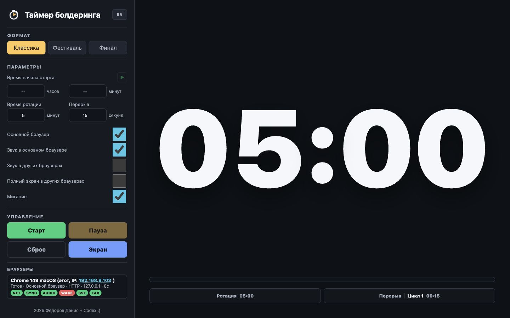
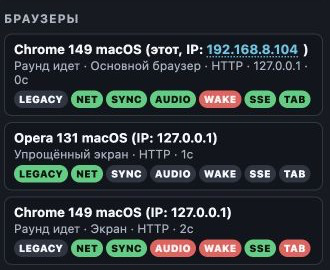
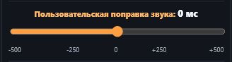
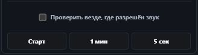
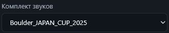

fdv-bouldering-timer.exe на Windows, start-timer-mac.command на macOS или start-timer-linux.sh на Linux. Windows BAT-файл остаётся резервным вариантом.
Полное руководство пользователя
Таймер болдеринга
Последовательная настройка соревнования, запуск по времени, управление синхронными экранами, диагностика и перенос приложения на другой компьютер.
Оглавление
Руководство построено в порядке обычной работы: от запуска и выбора формата до подключения экранов и переноса на новый компьютер.
Быстрый старт
Минимальная последовательность для запуска одного управляющего браузера и нескольких экранов.
На серверном компьютере используйте http://127.0.0.1:8008/.
Включите «Основной браузер» или нажмите Ctrl+M / Ctrl+Ь.
Откройте напечатанный сервером сетевой адрес на остальных устройствах.
- Выберите формат и задайте длительности.
- Для немедленного запуска нажмите «Старт» или Z / Я.
- Для старта по часам задайте время и нажмите маленькую кнопку ▶ рядом с заголовком «Время начала старта».
Готовая ссылка: IP основного браузера в списке «Браузеры» кликабелен. Нажатие копирует адрес с тем же протоколом HTTP/HTTPS и правильным портом.
↑ К оглавлению
Интерфейс
На компьютере панель управления находится слева, поле таймера — справа. Панель прокручивается отдельно, поэтому крупный таймер остаётся на месте даже при длинном списке браузеров.

Панель управления
- Формат — готовые режимы «Классика», «Фестиваль» и «Финал».
- Параметры — время старта, длительность ротации или раунда и перерыва.
- Переключатели — роль браузера, звук, удалённый звук, удалённый полный экран и мигание.
- Управление — старт, пауза, сброс и полноэкранный режим.
- Браузеры — подключённые устройства и их диагностика.
Поле таймера
Показывает оставшееся время текущего отрезка, ротацию или перерыв, номер цикла, следующее действие и прогресс.
Параметры активного запуска фиксируются на сервере. Изменять формат и длительности лучше до старта либо после «Сброса».
↑ К оглавлениюФорматы соревнований
Формат определяет единицы параметров, цикличность и поведение после окончания времени.
3.1. Классика
Классический формат по французской системе. Ротация и короткий перерыв повторяются циклически без заранее заданного числа циклов.
- Время ротации задаётся в минутах, перерыв — в секундах.
- После окончания ротации автоматически начинается перерыв, затем следующая ротация.
- Номер цикла увеличивается после каждой пары «ротация + перерыв».
- Если перерыв равен нулю, следующая ротация начинается сразу.
3.2. Фестиваль
Циклический формат с длинным раундом и длительным перерывом. Он работает по той же схеме повторения, что и «Классика», но обе длительности задаются в минутах.
- После раунда начинается перерыв, после перерыва — следующий раунд.
- Чекбокс «Объявления времени» включает или выключает сигналы за 60, 30, 10 и 5 минут до конца раунда.
- Для объявлений используются файлы выбранного профиля, а при их отсутствии — системный голос или сигнал минуты.
- Если перерыв равен нулю, следующий фестивальный раунд начинается сразу.
3.3. Финал
Международный одноразовый формат. Он выполняет одну ротацию и, если задан, один перерыв.
- Время ротации задаётся в минутах, перерыв — в секундах.
- Поле перерыва можно оставить пустым или установить ноль.
- После ротации и необязательного перерыва таймер останавливается на
00:00; в обычном основном интерфейсе это состояние дополнительно отмечается как завершённое. - Для следующего финального запуска достаточно снова нажать «Старт» или Z / Я.
| Свойство | Классика | Фестиваль | Финал |
|---|---|---|---|
| Ротация / раунд | Минуты | Минуты | Минуты |
| Перерыв | Секунды | Минуты | Секунды или без перерыва |
| Повторение | Бесконечные циклы | Бесконечные циклы | Один запуск |
| После окончания | Следующий цикл | Следующий цикл | 00:00, затем «Старт» для нового запуска |
Обратный отсчёт и запуск по времени
Поля часов и минут не изменяют действие обычной кнопки «Старт». Чтобы использовать указанное время, нажмите отдельную маленькую кнопку ▶ справа от надписи «Время начала старта». Горячей клавиши у неё нет.
Классика и Фестиваль
- Время в будущем: показывается обратный отсчёт, в назначенный момент первый цикл стартует автоматически.
- Время сегодня уже прошло: таймер восстанавливает текущую ротацию или перерыв так, будто соревнование началось в указанное время.
- При восстановлении учитываются все прошедшие циклы; на экране сразу появляется актуальный номер цикла и остаток текущего отрезка.
Финал
- Время в будущем: идёт предварительный обратный отсчёт.
- На нуле финал не начинается автоматически: таймер ждёт нажатия «Старт» или Z / Я.
- Время сегодня уже прошло: обратный отсчёт назначается на это время следующего дня; восстановление середины финала не выполняется.
Отмена назначенного старта
Во время обратного отсчёта маленькая кнопка ▶ превращается в ■. Нажмите её, чтобы отменить ожидание, сохранив формат, параметры и указанное время. «Сброс» или P / З полностью отменяет назначенный старт и возвращает таймер в исходное состояние.
Практический совет: заполняйте и часы, и минуты. До запуска кнопка ▶ назначает старт, а во время обратного отсчёта кнопка ■ отменяет его.
↑ К оглавлению
Кнопки и горячие клавиши
| Кнопка | Действие | Клавиатура |
|---|---|---|
| Старт | Немедленно запускает выбранный формат или продолжает после паузы. Указанное в полях время игнорируется. В финале также запускает соревнование после предварительного отсчёта или после предыдущего завершения на 00:00. |
Z / Я |
| Пауза | Останавливает текущую ротацию или перерыв и сохраняет положение на сервере. Во время предварительного обратного отсчёта кнопка заблокирована. | Ctrl+Q / Ctrl+Й |
| Сброс | Отменяет активный запуск, паузу, назначенный старт или завершённое состояние финала и возвращает начало первого отрезка с текущими параметрами. | P / З |
| Экран | Включает или выключает полный экран в текущем основном браузере. | Ctrl+F / Ctrl+А |
| Основной браузер | Назначает текущий браузер управляющим или снимает с него эту роль. | Ctrl+M / Ctrl+Ь |
| Запуск по времени ▶ | Использует часы и минуты по правилам главы 4. | Нет горячей клавиши |
Пробел не является горячей клавишей и не запускает и не останавливает таймер. Других клавиш, влияющих на старт или паузу, нет.
Полоса прогресса
Когда соревнование поставлено на паузу после начала, основной браузер может переместить положение внутри текущей ротации или перерыва, нажав нужное место на полосе прогресса. Во время работы и в браузерах-экранах перемотка отключена.
↑ К оглавлениюПодключение и управление экранами
6.1. Подключение
- Подключите серверный компьютер и все экраны к одной локальной сети.
- Запустите таймер. В окне запуска найдите адрес Wi-Fi или Ethernet, например
http://192.168.1.68:8008/. - Откройте этот адрес на телефоне, планшете, телевизоре или другом компьютере.
- В управляющем браузере включите «Основной браузер». Все остальные подключения автоматически перейдут в режим экрана.
- На мобильных устройствах один раз коснитесь страницы, чтобы браузер разрешил звук и попытку перехода в полный экран.
Основной IP: даже если управляющий браузер открыт через 127.0.0.1, приложение старается показать пригодный для других устройств сетевой IP. Только IP основного браузера кликабелен и копирует готовую ссылку.
6.2. Что можно делать из основного браузера
- Одновременно запускать, ставить на паузу и сбрасывать таймер на всех экранах.
- Менять формат, параметры и язык интерфейса для подключённых браузеров.
- Включать «Звук в других браузерах» для всех второстепенных экранов.
- Включать «Полный экран в других браузерах». Если браузер блокирует удалённый переход, на экране потребуется тап.
- Просматривать состояние каждого браузера, тестировать его звук и настраивать индивидуальную временную поправку.
Основной браузер расположен первым в списке и отмечен словом «этот». Сочетание Ctrl+M / Ctrl+Ь позволяет быстро переназначить роль при аварийной ситуации.
6.3. Диагностика подключений
Строка браузера содержит название и версию, операционную систему, IP, роль, протокол и цветные индикаторы. Наведение на индикатор показывает подробности.

| Индикатор | Назначение |
|---|---|
| NET | Состояние связи и задержка запроса. До 100 мс — зелёный, до 200 мс — жёлтый, выше — красный. |
| SYNC | Оценка ошибки синхронизации и разброс последних измерений. До 100 мс — зелёный, до 300 мс — жёлтый. |
| AUDIO | Разрешён ли звук, разблокирован ли он пользовательским касанием и какая задана индивидуальная поправка. |
| WAKE | Поддерживает ли браузер блокировку сна и активна ли она. |
| SSE | Работает ли постоянное соединение для мгновенной доставки команд. |
| TAB | Находится ли вкладка в видимом состоянии. |
Настройка AUDIO


- Нажмите индикатор AUDIO нужного браузера.
- Установите поправку от −500 до +500 мс: отрицательная запускает звук раньше, положительная — позже.
- Проверьте сигналы кнопками «Старт», «Финиш», «1 мин» и «5 сек».
- Во время работающего таймера кнопки проверки звука недоступны. Они остаются доступными во время обратного отсчёта до старта и на паузе.
- Для проверки всех устройств из строки основного браузера включите «Проверить везде, где разрешён звук».
- Повторно нажмите AUDIO, чтобы сохранить поправку.
6.4. Работа при временной потере сети
Сервер хранит общую точку старта, но каждый браузер самостоятельно рассчитывает текущее время. Поэтому потеря Wi-Fi сама по себе не должна останавливать цифры.
- Команды обычно приходят через SSE; резервная синхронизация выполняется примерно раз в две секунды.
- Неуспешный сетевой запрос ограничен тайм-аутом и не блокирует локальный ход таймера.
- Если сервер недоступен около 4,5 секунды, панель показывает предупреждение, а NET, SYNC и SSE становятся красными.
- Можно выбрать Автономный режим и продолжить управлять таймером только в этом браузере. Другие браузеры при этом не синхронизируются.
- В списке браузеров автономный режим показывает только текущий браузер. Нажмите AUDIO, чтобы настроить поправку от −500 до +500 мс и проверить сигналы START, END, MINUTE и WARNING.
- Прошедшее время старта в «Классике» и «Фестивале» восстанавливает таймер так, как если бы он был запущен сегодня в указанное время. В «Финале» прошедшее время означает обратный отсчёт до завтра.
- После восстановления связи автономный режим продолжает работать отдельно. Возврат к актуальному состоянию сервера выполняется только по кнопке, чтобы время не изменилось неожиданно.
Ограничение: автономные команды и изменения параметров не передаются на сервер. При возврате к серверу автономное состояние отбрасывается и браузер принимает серверное время.
↑ К оглавлению
Звук и мигание
- Звук в основном браузере управляет только звуком этого управляющего браузера.
- Звук в других браузерах разрешает сигналы на подключённых экранах.
- Дополнительный браузер на том же компьютере, что и основной, автоматически не дублирует звук.
- Мигание включает визуальную вспышку вместе с предупреждающими сигналами.
- Выключение звука отменяет уже запланированные аудиосигналы.
Используются сигнал начала ротации или перерыва, минутное предупреждение и последние пять секунд. В «Фестивале» чекбокс «Объявления времени» управляет дополнительными сигналами за 60, 30, 10 и 5 минут.
Звуковые профили
Комплект выбирается в панели управления или параметром sound_profile в params.txt. Каждый подкаталог внутри beeps является отдельным профилем. Для добавления собственного комплекта достаточно создать подкаталог и положить в него файлы со стандартными именами:

| Файл | Назначение |
|---|---|
START.wav или START.mp3 | Начало первой ротации и переход с перерыва на новую ротацию. |
END.wav или END.mp3 | Окончание ротации и начало перерыва. Файл необязателен: при его отсутствии используется START. |
MINUTE.wav или MINUTE.mp3 | Сигнал за одну минуту. |
WARNING.wav или WARNING.mp3 | Каждый сигнал последних пяти секунд. |
FESTIVAL_60.wav или FESTIVAL_60.mp3 | Объявление за 60 минут в Фестивале. |
FESTIVAL_30.wav или FESTIVAL_30.mp3 | Объявление за 30 минут в Фестивале. |
FESTIVAL_10.wav или FESTIVAL_10.mp3 | Объявление за 10 минут в Фестивале. |
FESTIVAL_5.wav или FESTIVAL_5.mp3 | Объявление за 5 минут в Фестивале. |
Регистр букв не важен. Если в профиле есть одноимённые WAV и MP3, используется WAV. При отсутствии START, MINUTE или WARNING для соответствующего события включается синтетический сигнал.
offline-audio.js содержит автономную копию всех звуковых профилей и основных параметров. Файл автоматически пересоздаётся при каждом запуске сервера. Поэтому после замены файлов в beeps достаточно один раз запустить таймер, а затем index.html можно открывать напрямую без сервера с полноценными звуками.
Фестивальные файлы необязательны. При включённых объявлениях используется файл профиля; если его нет — системный голос; если подходящий голос недоступен — сигнал MINUTE. Выключение чекбокса отменяет все четыре объявления независимо от содержимого профиля.
Нулевой перерыв: в «Классике» и «Фестивале» END не звучит, потому что сразу начинается следующая ротация и используется START. В «Финале» при завершении всегда звучит END или заменяющий его START.
Мобильные браузеры запрещают автоматический звук до первого пользовательского действия. Коснитесь страницы и убедитесь, что AUDIO стал зелёным.
↑ К оглавлениюПеренос и запуск на новом компьютере
Приложение переносимое: копируйте папку целиком, затем подготовьте Node.js, сеть и при необходимости новый сертификат.
Готовые архивы с portable Node.js для Windows, macOS и Linux опубликованы в GitHub Releases. Выберите файл своей ОС и архитектуры.
8.1. Что переносить
Перед копированием остановите таймер. В новой папке должны сохраниться как минимум:
index.htmloffline-audio.jsдля звуков при прямом автономном открытииserve-bouldering-timer.jsparams.txt- папка
beepsсо звуковыми профилями help.htmlhelp-assets- скрипты запуска своей ОС
- portable Node.js, если используется путь из
params.txt
Сертификаты можно перенести, но после смены компьютера или сетевого IP надёжнее создать их заново. Текущее состояние и прошедшее время хранятся в памяти сервера и после его остановки не переносятся.
8.2. Node.js
Используйте актуальную LTS-версию Node.js. Все варианты загрузки доступны на официальной странице Node.js. Есть два варианта:
- Системная установка: установите Node.js с nodejs.org и проверьте командой
node -v. - Portable runtime: на странице загрузки Node.js portable-версия называется Standalone Binary. Скачайте подходящий архив для своей ОС и архитектуры, распакуйте его и укажите путь к исполняемому файлу в
params.txt. По умолчанию используютсяruntime\win\node.exeдля Windows,runtime/mac/bin/nodeдля macOS иruntime/linux/bin/nodeдля Linux.
Параметры portable_node_win, portable_node_mac и portable_node_linux могут содержать относительный путь от папки таймера или абсолютный путь. Скрипт запуска сначала проверяет настроенный portable Node.js, а если файл не найден, пробует системную команду node. Краткие инструкции также находятся в каталогах runtime/win, runtime/mac и runtime/linux.
8.3. Первый запуск на Windows
- При необходимости проверьте порты и начальные значения в
params.txt. - Дважды щёлкните
fdv-bouldering-timer.exe. В portable-релизе он находится рядом с файлами таймера. - EXE покажет локальные и сетевые адреса, запустит сервер и откроет браузер. Закрытие окна сворачивает запускатель в область уведомлений; команда Stop and exit останавливает сервер.
- Если EXE отсутствует или не запускается, используйте резервный
start-timer-win.bat. - Если Windows Firewall запросит доступ для Node.js, разрешите его для частных сетей.
- Откроется
http://127.0.0.1:8008/, а окно запуска покажет адреса Wi-Fi и Ethernet. - Не закрывайте минимизированное окно сервера «Bouldering Timer Server» во время соревнования.
Порты: штатный скрипт перед запуском останавливает процессы, слушающие HTTP- и HTTPS-порты из params.txt. Не назначайте эти порты другому важному приложению.
8.4. Первый запуск на macOS
- При необходимости проверьте
params.txt. - Дважды щёлкните
start-timer-mac.command. - Откроется Terminal, затем локальная страница таймера. В Terminal будут напечатаны сетевые адреса.
- Оставьте окно Terminal открытым. Для остановки сервера нажмите Ctrl+C.
Если macOS сообщает, что разработчик не подтверждён, щёлкните файл правой кнопкой и выберите «Открыть». Если появляется «Permission denied», выполните в Terminal из папки проекта:
chmod +x start-timer-mac.command create-https-certificate-mac.command
Для portable Node.js выбирайте сборку своей архитектуры: arm64 для Apple Silicon или x64 для Intel.
8.5. Первый запуск на Linux
- Распакуйте архив и откройте Terminal в папке таймера.
- При необходимости выполните
chmod +x start-timer-linux.sh create-https-certificate-linux.sh. - Запустите
./start-timer-linux.sh. - Оставьте Terminal открытым. Для остановки сервера нажмите Ctrl+C.
Portable-релизы Linux выпускаются отдельно для x64 и arm64. Официальные сборки Node.js рассчитаны на glibc-дистрибутивы, включая Ubuntu, Debian и Fedora. Для Alpine Linux/musl требуется совместимая сборка Node.js.
8.6. HTTP и HTTPS
HTTP работает сразу. HTTPS полезен для мобильных браузеров и функций, которым нужен защищённый контекст, но локальный сертификат остаётся самоподписанным.
| ОС | Создание сертификата | Результат |
|---|---|---|
| Windows | create-https-certificate.bat | PEM через OpenSSL либо timer-cert.pfx встроенными средствами Windows |
| macOS | create-https-certificate-mac.command | timer-key.pem и timer-cert.pem |
| Linux | create-https-certificate-linux.sh | timer-key.pem и timer-cert.pem |
- Создавайте сертификат при подключённой рабочей сети: скрипт включает найденные IP-адреса в сертификат.
- После создания обязательно перезапустите сервер.
- Первое открытие HTTPS может показать предупреждение. Откройте дополнительные параметры и разрешите переход к локальному сайту.
- После смены компьютера или локального IP пересоздайте сертификат.
Ошибка Unsupported PKCS12 PFX data: файл timer-cert.pfx повреждён, имеет другой формат или пароль. Удалите только этот PFX, снова запустите штатный скрипт создания сертификата и перезапустите таймер. Не переименовывайте произвольный сертификат в .pfx.
8.7. Проверка после переноса
- Локальная страница открывается по
127.0.0.1. - Телефон открывает адрес Wi-Fi или Ethernet с указанным портом.
- Один браузер назначен основным, остальные видны как экраны.
- Работают «Старт», «Пауза», «Сброс» и соответствующие горячие клавиши.
- AUDIO, WAKE, SSE и TAB показывают ожидаемое состояние.
- Звуковые сигналы слышны только на нужных устройствах.
Файл params.txt
Файл задаёт начальные значения при старте сервера. После изменения остановите и снова запустите приложение.
| Параметр | Назначение | Пример |
|---|---|---|
http_port | Порт HTTP | 8008 |
https_port | Порт HTTPS | 8443 |
portable_node_win | Путь к portable Node.js для Windows | runtime\win\node.exe |
portable_node_mac | Путь к portable Node.js для macOS | runtime/mac/bin/node |
portable_node_linux | Путь к portable Node.js для Linux | runtime/linux/bin/node |
language | Начальный язык интерфейса и отдельно открытого руководства | ru / en |
classic_rotation_minutes | Ротация «Классики», минуты | 5 |
classic_break_seconds | Перерыв «Классики», секунды | 15 |
festival_round_minutes | Фестивальный раунд, минуты | 120 |
festival_break_minutes | Фестивальный перерыв, минуты | 30 |
final_rotation_minutes | Ротация финала, минуты | 4 |
primary_browser | Автоматически назначить первый браузер основным | false |
sound | Начальное состояние звука | true |
sound_in_other_browsers | Начальное состояние звука экранов | false |
festival_announcements | Начальное состояние фестивальных объявлений времени | true |
flashing | Начальное состояние мигания | true |
sound_profile | Название подкаталога звукового профиля внутри beeps | FSR_2026 |
timer_font_file | Файл основного шрифта таймера внутри каталога fonts | Roboto-Variable.ttf |
timer_font | Резервный список системных шрифтов | Arial, sans-serif |
rotation_text_color | Цвет цифр во время ротации | #f4f7fb |
rotation_last_five_text_color | Цвет цифр в последние 5 секунд ротации | #f4f7fb |
break_text_color | Цвет цифр во время перерыва | #f4f7fb |
rotation_background_color | Цвет фона во время ротации | #0e1116 |
rotation_last_five_background_color | Цвет фона в последние 5 секунд ротации | #0e1116 |
break_background_color | Цвет фона во время перерыва | #f05a59 |
Основной шрифт загружается всеми экранами с локального сервера, поэтому устанавливать его на устройства не требуется. Поместите WOFF2, WOFF, TTF или OTF в каталог fonts и укажите только имя файла без пути. В комплект входят Roboto, Open Sans, Barlow Condensed, Courier Prime и Syne Mono; все они имеют обычный пустой ноль. У Roboto, Open Sans и Barlow Condensed круглые точки двоеточия. Полный список имён находится в fonts/README.txt. Если файл отсутствует или не поддерживается браузером, используется список timer_font. Размер цифр всегда рассчитывается автоматически.
Значения, изменённые в интерфейсе, действуют в текущем запуске сервера, но не переписывают params.txt.
Устранение проблем
127.0.0.1 работает, а сетевой IP — нет
Проверьте, что устройства находятся в одной обычной, не гостевой сети; используется адрес Wi-Fi/Ethernet с портом; Node.js разрешён в Firewall; VPN отключён; роутер не изолирует клиентов.
В списке показывается неправильный сетевой адрес
На компьютере могут быть VPN, Docker, виртуальные адаптеры и несколько сетевых интерфейсов. Используйте адрес, помеченный Wi-Fi или Ethernet в окне запуска. Кликабельный IP основного браузера копирует ссылку с его протоколом и портом.
На телефоне нет звука или полного экрана
Один раз коснитесь страницы, проверьте AUDIO, системную громкость и беззвучный режим. Для полного экрана включите соответствующий переключатель в основном браузере и снова коснитесь экрана.
Экран погас или вкладка уснула
Проверьте WAKE и TAB, отключите энергосбережение и автоблокировку, оставьте вкладку видимой. Некоторые мобильные ОС могут принудительно ограничивать браузер даже при активном Wake Lock.
После переключения телефона на сотовую сеть команды не приходят
Это ожидаемо: сервер доступен только в локальной сети. Локальный отсчёт продолжится, но «Пауза» и «Сброс» будут получены только после возвращения к Wi-Fi.
Изменения интерфейса не появились
Перезагрузите страницу с очисткой кэша: Command+Shift+R на macOS или Ctrl+Shift+R на Windows. После изменения
serve-bouldering-timer.js перезапустите сервер.Порт уже занят
Измените
http_port и https_port в params.txt либо остановите другое приложение на этих портах. Штатные скрипты пытаются освободить настроенные порты перед запуском.HTTPS показывает предупреждение
Сертификат самоподписанный. Разрешите открытие локального сайта через дополнительные параметры браузера. Если IP изменился, создайте сертификат заново.
Ошибка Unsupported PKCS12 PFX data
Удалите повреждённый
timer-cert.pfx, создайте сертификат штатным Windows-скриптом и перезапустите приложение. Сервер ожидает PFX, созданный этим скриптом, с паролем bouldering-timer.